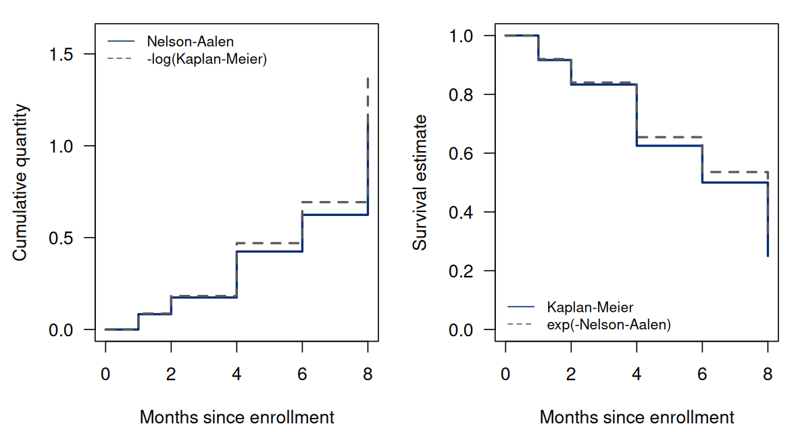
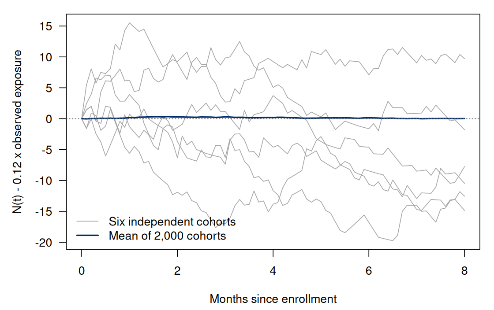

Chapter 4. Nelson–Aalen estimation and counting processes
4.1 A cumulative rate, estimated from changing denominators
The previous chapter estimated survival by multiplying conditional chances of remaining event-free. Another useful question is how much event hazard has accumulated by a specified time. In the continuous model of Chapter 2, the target is (4.1) This quantity is dimensionless and nonnegative. It is neither an event probability nor an expected number of recurrences per person. Its value can exceed one even when each person can experience only one event. A cumulative hazard of two corresponds to survival , not to two observed events for every participant.
The data still consist of , with the event-first convention and risk counts used in Chapter 3. We begin with independent subjects, continuous event times, and independent right censoring. More precisely, the observable event rate among those still under observation must equal the population event hazard. Adequate follow-up is required over the reporting interval. These assumptions concern the same selection problem as before; a different transformation of the curve cannot remove it.
The Nelson–Aalen estimator adds an observed event count divided by its current risk count. The arithmetic is simple. Understanding why its uncertainty can also be accumulated requires a language for the evolving information in a study. Counting processes supply that language without requiring us to treat the observed events as a Poisson process.
4.2 Records viewed as processes
For one participant define the latent and observed counting processes (4.2) The latent count records whether the event has occurred. The observed count records whether it has been observed. A censored person’s observed count remains zero, even though their latent count may subsequently become one. The at-risk process records availability immediately before the event calculation. It includes a participant at their own event time and at a same-time censoring record.
The processes are right-continuous step functions. The convention for makes it left-continuous at the recorded exit: it equals one at the exit and zero immediately afterward. This is not a cosmetic distinction. Replacing by would exclude an event from its own denominator. Aggregate counts and risk sets are and . An individual first-event count has jumps of at most one. An aggregate count can jump by two or more when recorded events tie. Our cohort has just such a jump at month 4.
Write for the increment concentrated at an event time. For these step functions an integral against is a sum: (4.3) It differs from an ordinary time integral. Integrating against time counts observed person-time, whereas integrating one against counts events. At a finite horizon, (4.4) The first expression equals total recorded follow-up only when the horizon reaches every exit. For our cohort it is 46 person-months at month 5 and 56 at month 8. The observed event counts at those times are four and six. A rate calculation must specify both its event window and its exposure window.
4.3 What information may an event rate use?
Let denote the information accumulated through time : baseline information, observed events, and exits up to that time. It does not include unobserved future event times. A process is adapted if its value at time can be determined from that history. A predictable process can be evaluated immediately before the next event increment is revealed. Left-continuous adapted processes, including the risk indicator here, are predictable. This is the mathematical version of constructing a denominator without first looking at which person fails next.
Under the continuous common-hazard model, the intensity of the observed count is . Informally, conditional on the current history, an observable event in a sufficiently short interval has probability to first order. An individual who already exited has intensity zero. Independent censoring permits the event hazard in the remaining observed risk set to be the same as in the target population. If impending deterioration causes informative dropout, that equality may fail even though every risk count is calculated correctly.
The accumulated intensity is called the compensator: (4.5) We use for the compensator and retain for the discrete cumulative hazard from Chapter 2. The two accumulate different quantities. Under the stated model and integrability conditions, is a martingale: for . Its future change has conditional mean zero, given the information already available. It need not be zero along an individual sample path. Its increments need not be independent or identically distributed.
For a known exponential rate , a participant’s compensator is . Until exit it increases steadily; an observed event makes the count jump; after exit both are constant. The count is not a Poisson process: it stops after its first event, and its intensity depends on that stopping. The martingale property concerns conditional mean increments, a substantially weaker and more appropriate requirement.
4.4 Deriving the estimator and locating its support
Summing individual compensators gives the aggregate decomposition (4.6) Define and set when the risk set is empty. Multiplying by this predictable inverse denominator and integrating produces the estimator (4.7) It is a right-continuous step function whose jumps are estimated cumulative hazard increments. A jump has no time units; it is not itself an estimate of a continuous hazard rate at . Estimating a rate requires specifying an interval or a smoothing scale; a cumulative-hazard jump alone does not estimate an instantaneous rate.
The decomposition also states exactly what the estimator tracks: (4.8) On an interval with nonempty risk sets the target inside the integral is . After all subjects exit, the estimator stops accumulating information. In general the difference from includes the missing term as well. Thus a mean-zero martingale calculation does not prove exact unbiasedness for an arbitrarily late fixed-horizon cumulative hazard. The distinction can be made quantitative. If , the integrand is bounded by one, so the martingale integral has mean zero under the stated intensity model. Taking expectations gives (4.9) For independent identical records, write . Then . At a fixed horizon where remains positive, the missing-support factor tends to zero as grows. In a small sample or an unsupported tail it can matter. This is a finite-sample support effect, distinct from informative censoring, which would invalidate the event-intensity model in the first place.
4.5 Compute the same cohort on two scales
We return to the same twelve records and event-first risk sets calculated in Chapter 3. At months 1, 2, and 4 the cumulative-hazard contributions are , , and . No event occurs at month 5, so (4.10) Exponentiating gives . Kaplan–Meier gives . These two estimates need not agree in a finite sample, even though the continuous population identity is exact. At month 8 the cumulative estimate is , the exponential survival estimate is , and Kaplan–Meier is . The same data can therefore give different plug-in survival estimates without a contradiction: the continuous identity links population functions, whereas the two estimators use different finite jumps. Our month-level cohort is a worked calculation with recorded ties; the continuous-time martingale model explains the estimator’s usual asymptotics. A population with genuinely discrete failure masses requires the separate interpretation below.
4.5.1 From first principles
Here is the central computation, with distinct recorded times
u, risk counts y, and event counts
d:
Run the complete R example
Dependencies: base R, survival. This complete block includes the data, setup and calculations. Run it in a fresh R session. Short code excerpts above explain individual steps; this block supplies their shared setup. Figures and tables are written to a temporary directory.
Complete R example
# Complete R example. Synthetic data; no external files are required.
local({
previous.directory <- getwd()
example.directory <- tempfile("biomedical-example-")
dir.create(example.directory)
setwd(example.directory)
on.exit(setwd(previous.directory))
dir.create("generated",showWarnings=FALSE)
# cumulative hazard and event-count martingales.
options(stringsAsFactors = FALSE, width = 110)
dir.create("results", showWarnings = FALSE)
dir.create("figures", showWarnings = FALSE)
if (!requireNamespace("survival", quietly = TRUE))
stop("Install package 'survival' before running this example.")
na.table <- function(time, status) {
stopifnot(length(time) == length(status), length(time) > 0L,
all(is.finite(time)), all(time >= 0), all(status %in% 0:1))
u <- sort(unique(time))
y <- vapply(u, function(t) sum(time >= t), numeric(1))
d <- vapply(u, function(t) sum(time == t & status == 1), numeric(1))
H <- cumsum(d/y)
VA <- cumsum(d/y^2)
VB <- cumsum(d*(y-d)/y^3)
S <- cumprod(1-d/y)
lower <- upper <- rep(NA_real_, length(u))
ok <- H > 0
lower[ok] <- H[ok]*exp(-qnorm(.975)*sqrt(VA[ok])/H[ok])
upper[ok] <- H[ok]*exp(qnorm(.975)*sqrt(VA[ok])/H[ok])
data.frame(time = u, risk = y, events = d, cumulative.hazard = H,
survival.na = exp(-H), survival.km = S, variance.aalen = VA,
variance.binomial = VB, hazard.lower = lower, hazard.upper = upper,
survival.lower = exp(-upper), survival.upper = exp(-lower))
}
step.at <- function(tab, t, variable, initial = 0) {
c(initial, tab[[variable]])[findInterval(t, tab$time)+1L]
}
save.plot <- function(stem, draw, width = 7, height = 4.4) {
cairo_pdf(paste0("figures/", stem, ".pdf"), width = width, height = height,
family = "serif")
draw(); dev.off()
png(paste0("figures/", stem, ".png"), width = width*160, height = height*160, res = 160)
draw(); dev.off()
}
cohort <- data.frame(id = LETTERS[1:12],
time = c(1, 2, 2, 3, 4, 4, 5, 6, 6, 7, 8, 8),
status = c(1, 1, 0, 0, 1, 1, 0, 1, 0, 0, 1, 0))
tab <- na.table(cohort$time, cohort$status)
at5 <- tab[tab$time == 5, ]; at6 <- tab[tab$time == 6, ]
stopifnot(abs(at5$cumulative.hazard-14/33) < 1e-12,
abs(at6$cumulative.hazard-103/165) < 1e-12,
abs(at5$variance.aalen-(1/144+1/121+2/64)) < 1e-12,
abs(at6$variance.binomial-(11/12^3+10/11^3+12/8^3+4/5^3)) < 1e-12,
all(tab$survival.km <= tab$survival.na+1e-12),
all(vapply(c(2,5,8), function(t) sum(pmin(cohort$time,t)), 0.0)==c(23,46,56)))
terminal <- na.table(c(1,2,3), rep(1,3))
stopifnot(tail(terminal$survival.km,1)==0,
abs(tail(terminal$cumulative.hazard,1)-11/6) < 1e-12)
# Standard R workflow: exp(-H_NA) with the same Aalen variance and log(H) CI.
fit <- survival::survfit(survival::Surv(time, status) ~ 1,
data = cohort, stype = 2, ctype = 1, robust = FALSE,
conf.int = .95, conf.type = "log-log", conf.lower = "usual")
stopifnot(max(abs(fit$cumhaz - tab$cumulative.hazard)) < 1e-12,
max(abs(fit$surv - tab$survival.na)) < 1e-12,
max(abs(fit$std.chaz^2 - tab$variance.aalen)) < 1e-12,
max(abs(fit$lower - tab$survival.lower)) < 1e-12,
max(abs(fit$upper - tab$survival.upper)) < 1e-12)
# The tied-event correction replaces d/y by sum_{k=0}^{d-1} 1/(y-k).
fit.tie.corrected <- survival::survfit(survival::Surv(time, status) ~ 1,
data = cohort, stype = 2, ctype = 2, robust = FALSE,
conf.type = "log-log")
corrected.increment <- vapply(seq_along(tab$events), function(j) {
d <- tab$events[j]; y <- tab$risk[j]
if (d == 0) 0 else sum(1/(y - seq.int(0, d - 1)))
}, numeric(1))
stopifnot(max(abs(fit.tie.corrected$cumhaz - cumsum(corrected.increment))) < 1e-12)
workflow.comparison <- data.frame(time = tab$time,
direct.H = tab$cumulative.hazard, survfit.H = fit$cumhaz,
direct.survival = tab$survival.na, survfit.survival = fit$surv,
tied.corrected.H = fit.tie.corrected$cumhaz,
survival.km = tab$survival.km, variance.aalen = fit$std.chaz^2,
lower = fit$lower, upper = fit$upper)
write.csv(workflow.comparison, "results/ch04-package-comparison.csv", row.names = FALSE)
selected <- workflow.comparison[workflow.comparison$time %in% c(4, 5, 6, 8), ]
table.lines <- c("\\begin{tabular}{rrrrr}\\toprule",
"Month & $\\widehat H_{\\rm NA}$ & Tied correction & $e^{-\\widehat H_{\\rm NA}}$ & KM\\\\\\midrule")
for (j in seq_len(nrow(selected))) {
rr <- selected[j, ]
table.lines <- c(table.lines, sprintf("%d & %.6f & %.6f & %.6f & %.6f\\\\",
rr$time, rr$survfit.H, rr$tied.corrected.H, rr$survfit.survival, rr$survival.km))
}
writeLines(c(table.lines, "\\bottomrule\\end{tabular}"),
"results/ch04-package-table.tex")
write.csv(data.frame(package = c("R", "survival"),
version = c(as.character(getRversion()), as.character(utils::packageVersion("survival")))),
"results/ch04-package-versions.csv", row.names = FALSE)
write.csv(tab,"results/ch04-na-table.csv",row.names=FALSE)
save.plot("ch04-na-km", function() {
par(mfrow=c(1,2),mar=c(4.2,4.4,1.1,1),las=1)
plot(c(0,tab$time),c(0,tab$cumulative.hazard),type="s",col="#002D72",lwd=2,
xlab="Months since enrollment",ylab="Cumulative quantity",ylim=c(0,1.6))
lines(c(0,tab$time),c(0,-log(tab$survival.km)),type="s",lty=2,col="gray35",lwd=2)
legend("topleft",c("Nelson-Aalen","-log(Kaplan-Meier)"),lty=c(1,2),col=c("#002D72","gray35"),bty="n",cex=.8)
plot(c(0,tab$time),c(1,tab$survival.km),type="s",col="#002D72",lwd=2,
xlab="Months since enrollment",ylab="Survival estimate",ylim=c(0,1))
lines(c(0,tab$time),c(1,tab$survival.na),type="s",lty=2,col="gray35",lwd=2)
legend("bottomleft",c("Kaplan-Meier","exp(-Nelson-Aalen)"),lty=c(1,2),col=c("#002D72","gray35"),bty="n",cex=.8)
},width=7.4,height=4)
# The true event rate is used, rather than a fitted rate that forces M(5)=0.
set.seed(6750401)
n <- 300L; B <- 2000L; lambda <- .12; censor.rate <- .08
horizon <- 5; closure <- 8; grid <- seq(0,8,by=.1)
replicates <- matrix(NA_real_, B, 4L)
colnames(replicates) <- c("residual5","hazard5","variance5","exposure5")
paths <- matrix(0, B, length(grid))
for (b in seq_len(B)) {
T <- rexp(n,rate=lambda); C <- rexp(n,rate=censor.rate)
X <- pmin(T,C,closure); delta <- as.integer(T<=C & T<=closure)
events <- sort(X[delta==1L & X<=horizon])
risk <- vapply(events,function(t) sum(X>=t),0.0)
exposure <- sum(pmin(X,horizon))
replicates[b,] <- c(length(events)-lambda*exposure,
sum(1/risk),sum(1/risk^2),exposure)
paths[b,] <- vapply(grid,function(t) sum(delta*(X<=t))-lambda*sum(pmin(X,t)),0.0)
}
expected.exposure <- n*(-expm1(-(lambda+censor.rate)*horizon))/(lambda+censor.rate)
expected.events <- lambda*expected.exposure
summary <- data.frame(quantity=c("M(5)","H_NA(5)","Aalen variance", "Observed exposure"),
mean=colMeans(replicates),
mc.se=apply(replicates,2,sd)/sqrt(B),
target=c(0,lambda*horizon,NA,expected.exposure))
stopifnot(abs(summary$mean[1]) < 4*summary$mc.se[1],
abs(summary$mean[2]-lambda*horizon) < 4*summary$mc.se[2],
abs(mean(replicates[,3])/var(replicates[,2])-1) < .15)
write.csv(as.data.frame(replicates),"results/ch04-martingale-replicates.csv",row.names=FALSE)
write.csv(summary,"results/ch04-martingale-summary.csv",row.names=FALSE)
write.csv(data.frame(time=grid, mean=colMeans(paths),t(paths[1:6,])),
"results/ch04-martingale-paths.csv",row.names=FALSE)
save.plot("ch04-martingale", function() {
par(mar=c(4.3,4.7,1,1),las=1)
matplot(grid,t(paths[1:6,]),type="l",lty=1,col=rep("gray65",6),
xlab="Months since enrollment",ylab="N(t) - 0.12 x observed exposure")
lines(grid,colMeans(paths),col="#002D72",lwd=2)
abline(h=0,lty=3,col="gray40")
legend("bottomleft",c("Six independent cohorts","Mean of 2,000 cohorts"),
lty=1,col=c("gray65","#002D72"),lwd=c(1,2),bty="n")
})
capture.output(sessionInfo(),file="results/ch04-sessionInfo.txt")
print(at5); print(at6); print(summary)
print(selected, row.names = FALSE)
cat("\nSelected numerical results\n")
for (candidate in c("reader", "summary", "summary.mc", "perf", "comparison", "route.comparison", "test", "tab", "exact", "workflow.ci", "coef.tab", "evaluation.table")) {
if (exists(candidate, inherits=FALSE)) {
value <- get(candidate, inherits=FALSE)
if (is.data.frame(value) || is.matrix(value)) { cat(candidate, "\n"); print(utils::head(value,8)) }
}
}
cat("R", as.character(getRversion()), "\n")
})
This excerpt shows a step inside the preceding complete R example; it uses that block’s data and setup.
u <- sort(unique(time))
y <- vapply(u, function(t) sum(time >= t), numeric(1))
d <- vapply(u, function(t) sum(time == t & status == 1), numeric(1))
H <- cumsum(d/y)
S.na <- exp(-H)
S.km <- cumprod(1-d/y)
V.aalen <- cumsum(d/y^2)Keeping censoring-only times makes the output easier to audit: they
add zero to the cumulative hazard. The quantity V.aalen
stores the variance accumulation derived in the next section. The
complete R example contains the twelve records and evaluates both the
cumulative-hazard sum and the survival product without needing another
chapter’s saved output.
4.5.2 Standard R workflow
Use the same records with an explicit exponential-survival transformation and uncorrected cumulative-hazard increments [1]:
This excerpt shows a step inside the preceding complete R example; it uses that block’s data and setup.
fit.na <- survival::survfit(survival::Surv(time, status) ~ 1,
data = cohort, stype = 2, ctype = 1, robust = FALSE,
conf.type = "log-log", conf.int = .95, conf.lower = "usual")
data.frame(time = fit.na$time,
cumulative.hazard = fit.na$cumhaz, survival = fit.na$surv)stype = 2 means survival is obtained by exponentiating
the negative cumulative hazard. With ctype = 1,
fit.na$cumhaz agrees with cumsum(d/y) and
fit.na$surv agrees with exp(-H). This
agreement concerns the Nelson–Aalen route, not Kaplan–Meier. Choosing
stype = 1 would instead give the survival product while
retaining the same accompanying cumulative-hazard sum.
A second package choice is ctype = 2, a
Fleming–Harrington correction for tied events. A tied increment with
events and risk count
becomes
.
At month 4 this is
,
rather than
.
It agrees with the uncorrected increment when
and is larger when
.
The complete R example calculates this alternative both directly and
with survfit(). Table 4.1
keeps the data fixed so that the effect of changing a numerical
convention is visible. An analyst should choose and report a convention
consistent with the observation model rather than alter options until
different curves coincide.
| Month | $\widehat H_{\rm NA}$ | Tied correction | $e^{-\widehat H_{\rm NA}}$ | KM |
|---|---|---|---|---|
| 4 | 0.424242 | 0.442100 | 0.654265 | 0.625000 |
| 5 | 0.424242 | 0.442100 | 0.654265 | 0.625000 |
| 6 | 0.624242 | 0.642100 | 0.535667 | 0.500000 |
| 8 | 1.124242 | 1.142100 | 0.324899 | 0.250000 |


4.6 Why the product and the exponential differ
Put . For every , . Therefore, before a terminal jump to zero, (4.11) Equivalently, . The discrepancy is not an implementation error. The exponential replaces each factor by .
Taylor expansion supplies a useful quantitative condition. If , the gap is at most (4.12) For continuous event times on a fixed supported interval, increasing the sample size makes individual jumps small. Under usual regularity conditions the estimators then have the same first-order asymptotic behavior. That statement does not cover an interval whose last risk set remains tiny. If , Kaplan–Meier becomes zero while the corresponding Nelson–Aalen increment is only one; its exponential remains positive.
Nor does the equivalence apply automatically to genuinely discrete event times with fixed positive masses. There estimates a discrete conditional probability . The sum estimates , while survival is , not . For one time with , the large-sample limits are and . More observations do not remove that difference. Recorded ties, grouping, and true discrete masses require attention to the observation model, not a blanket appeal to asymptotics.
4.7 Accumulating uncertainty
For independent subjects with continuous event hazards and no simultaneous events, the aggregate martingale has predictable quadratic variation . Weighting the increments by gives the error process in (4.8) a predictable variance accumulation . Replacing the unobserved intensity increment by the observed count increment gives (4.13) This is the usual Aalen variance estimate. The martingale argument uses conditional mean-zero increments, not independent random denominators. The formula is commonly calculated with tied recorded times too, but its continuous-time justification should not be mistaken for an exact tied binomial variance statement.
Indeed, if is modeled conditionally as binomial with parameters , then the conditional variance of is . Substitution gives the alternative accumulation (4.14) These are distinct approximations motivated by distinct increment models. Neither is Greenwood’s variance for the survival product. At month 5, and . Large tied event fractions make the distinction noticeable.
For
,
a delta-method standard error for
is
.
Exponentiating an approximate normal interval gives positive
cumulative-hazard limits
(4.15) The minus sign
defines
.
At month 5 the limits are approximately
.
Survival limits from this construction are
.
They concern the exponential Nelson–Aalen estimate, not the identical
interval calculation used for Kaplan–Meier in Chapter 3. These are
pointwise large-sample approximations. Zero-event boundaries, small risk
sets, and informative censoring are not resolved by transforming an
interval. For the stype = 2, ctype = 1 workflow above, the
square of fit.na$std.chaz equals V.aalen, and
conf.type = "log-log" applies the log-cumulative-hazard
construction in (4.15). Its survival limits
agree with the explicit transformed limits. The identical option name in
Chapter 3 acts on a different fitted curve and
variance, so it produces different endpoints. Leaving
conf.type at its default "log" would use a
different interval transformation again.
4.8 From a known intensity to a fitted rate
The compensator contains the unknown event hazard, so it is usually not directly observed in a real study. This does not make the argument circular: it specifies a model property from which an estimating procedure is derived. An analogy is the familiar regression statement that an error has conditional mean zero. One uses that assumption to fit regression coefficients; a fitted residual is then a different object from the original unobserved error.
For example, suppose the event hazard is assumed constant on a prespecified interval . The compensator increment over that interval equals the unknown rate times observed exposure. Its unconditional expectation equals that of the event count; it need not be the conditional expected count given the entire realized exposure path. Equating the observed and compensator increments gives (4.16) provided the denominator is positive. The denominator equals for this all-at-baseline cohort. It counts the actual observed time contributed inside the interval. It does not assign the full interval width to a participant who left near its beginning. Independent censoring remains part of the justification, and the constant-rate restriction is an additional modeling assumption.
The numerator has units of events and the denominator has units of person-months, so this estimator has rate units. In contrast, the Nelson–Aalen increment is dimensionless. For the whole interval , the cohort’s rate estimate is per month. Multiplying by five gives a cumulative hazard of under the constant-rate model, close to but different from the Nelson–Aalen value . One uses actual time exposure under a shape restriction; the other adapts its event denominator at every distinct event time. Numerical similarity in a small example does not make their assumptions identical.
If no event occurs in an interval, the fitted constant rate is zero. That is a boundary estimate based on finite information, not proof that the population intensity was zero. If exposure is zero, the interval rate is not identified by these observations at all. Estimating a changing rate by borrowing information over nearby times adds a smoothing assumption. A smoother borrows information; it does not create follow-up where there was none.
4.9 A simulation of the compensator argument
We leave the twelve-person cohort for a separate simulation in which the population rate is known. Each generated cohort contains 300 subjects with independent exponential event times at rate per month, independent exponential censoring at rate , and administrative closure at month 8. At time 5, the expected exposure is person-months. Multiplication by gives expected observed events . Consequently has mean zero. The known rate is essential: we do not first fit a rate that forces the residual to vanish.
The script uses seed and 2,000 independent cohorts. The mean residual is with Monte Carlo standard error ; the mean cumulative-hazard estimate is with Monte Carlo standard error , compared with target . Individual paths fluctuate substantially. The average estimated variance, , is close to the empirical variance across these cohorts. Their comparison tests the variance calculation in a specified model with independent censoring. It does not assess whether censoring in another study follows that model.
Equation (4.9) explains why the cumulative-hazard mean is compared with as a practically close reference rather than an exact finite-sample identity. Here and , so the probability that all subjects exit before the reporting horizon is , approximately . The support correction is negligible at the displayed precision, while Monte Carlo variation is plainly visible.


4.10 Exercises
Exposure and counts are different integrals. Use the twelve-person cohort with observed follow-up months and event indicators , in participant order A–L. Everyone enters at zero. Same-time events are counted before censoring; a censor at establishes . Define and . Prove and . Calculate both quantities at months 2, 5 and 8 and give their units.
The information available before an event. For a first-event record , compare and at an event time. State which convention represents membership just before that event and why the difference matters for integration against but not against . In the usual observed-history filtration, assess whether a weight equal to one exactly when the next event will occur in a high-risk person is predictable. Contrast it with a measured baseline high-risk indicator.
When exponentiating a hazard sum is an approximation. For finitely many event fractions with , prove Use the bound to state sufficient small-increment conditions for the survival product and exponentiated hazard sum to approach each other. Then construct a discrete event-time distribution with no censoring for which their probability limits differ at a fixed time.
The estimator stops when observation stops. Under the independent-subject continuous first-event intensity model, write , where is the aggregate martingale, and let with when . Derive the decomposition of into a martingale integral and a missing-support term. Assume finite and the stated integrability conditions. Explain the sign of the stopped estimator’s bias. Separately, for three uncensored events at times 1, 2 and 3, compute terminal Kaplan–Meier and exponentiated Nelson–Aalen survival and interpret their difference.
A fitted residual identity. Let independent subjects have event time and independent dropout time , both in months. Observation closes at month 5. Derive expected total observed exposure and expected event count through that horizon. If each realized sample instead fits , show what its aggregate fitted residual is whenever exposure is positive. Explain why that identity cannot test whether the true hazard is constant.